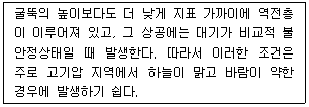
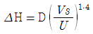
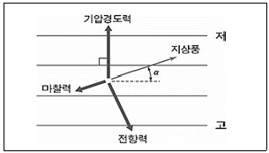
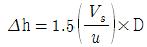
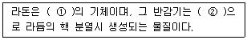
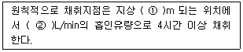
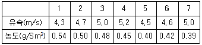
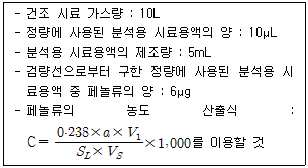
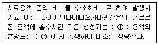
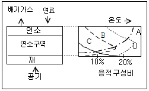

대기환경산업기사 (2015-03-08 기출문제)
1과목: 대기오염개론
1. 대류권에서 광화학 대기오염에 영향을 미치는 중요한 태양 및 흡수기체의 흡수성에 관한 설명으로 옳지 않은 것은?
- 오존은 200~320nm의 파장에서 강한 흡수가, 450~700nm에서는 약한 흡수가 있다.
- 이산화황은 파장 340nm이하와 470~550nm에 강한 흡수를 보이며, 대류권에서 쉽게 광분해 된다.
- 알데히드는 313nm이하에서 광분해한다.
- 케톤은 300~700nm에서 약한 흡수를 하여 광분해한다.
(정답률: 80%)

2. 다음이 설명하는 굴뚝 연기 형태는?

- Looping
- Lofting
- Fumigation
- Coning
(정답률: 78%)
3. 경도모델(또는 K-이론모델)의 가정으로 옳지 않은 것은?
- 오염물질은 지표를 침투하며 반사되지 않는다.
- 배출원에서 오염물질의 농도는 무한하다.
- 풍하 측으로 지표면은 평평하고 균등하다.
- 풍하 쪽으로 가면서 대기의 안정도는 일정하고 확산계수는 변하지 않는다.
(정답률: 82%)
4. 1985년 채택된 오존층 보호를 위한 국제협약은?
- 제네바 협약
- 비엔나 협약
- 기후변화 협약
- 리우 협약
(정답률: 94%)
5. 다음 특정물질 중 오존파괴지수가 가장 낮은 것은?
- CFC-115
- 사염화탄소
- Halon-2402
- Halon-1301
(정답률: 80%)
6. B-C유 보일러 배출가스 중 SO2농도가 표준상태에서 560ppm으로 측정되었다면 같은 조건에서는 몇 mg/Sm3 인가?
- 392
- 1,600
- 3,200
- 3,870
(정답률: 83%)
7. 다음 역사적 대기오염사건 중 주로 자동차 배출가스의 광화학반응으로 생긴 사건은?
- 런던사건
- 도노라사건
- 보팔사건
- 로스앤젤레스사건
(정답률: 92%)
8. 다음 중 분산모델의 특징으로 가장 거리가 먼 것은?
- 지형 및 오염원의 조업조건에 영향을 받는다.
- 2차 오염원의 확인이 가능하다.
- 점, 선, 면 오염원의 영향을 평가할 수 있다.
- 지형, 기상학적 정보 없이도 사용 가능하다.
(정답률: 80%)
9. 다음 중 방사역전(radiation inversion)이 가장 잘 발생하는 계절과 시기는?
- 여름철 맑은 날 정오
- 여름철 흐린 날 오후
- 겨울철 맑은 날 이른 아침
- 겨울철 흐린 날 오후
(정답률: 89%)
10. Aerodynamic diameter의 정의로 가장 적합한 것은?
- 본래의 먼지보다 침강속도가 작은 구형입자의 직경
- 본래의 먼지와 침강속도가 동일하며, 밀도 1g/cm3인 구형입자의 직경
- 본래의 먼지와 밀도 및 침강속도가 동일한 구형입자의 직경
- 본래의 먼지보다 침강속도가 큰 구형입자의 직경
(정답률: 91%)
11. 지구상에 분포하는 오존에 관한 설명으로 옳지 않은 것은?
- 오존량은 돕슨(Dobson) 단위로 나타내는데, 1Dobson은 지구 대기 중 오존의 총량을 0℃, 1기압의 표준상태에서 두께로 환산하였을 때 0.01cm에 상당하는 양이다.
- 몬트리올 의정서는 오존층 파괴물질의 규제와 관련한 국제협약이다.
- 오존의 생성 및 분해반응에 의해 자연 상태의 성층권 영역에는 일정 수준의 오존량이 평형을 이루게 되고, 다른 대기권역에 비해 오존의 농도가 높은 오존층이 생긴다.
- 지구 전체의 평균오존전량은 약 300Dobson 이지만, 지리적 또는 계절적으로 그 평균값의 ±50% 정도까지 변화하고 있다.
(정답률: 88%)
12. 1984년 인도의 보팔시에서 발생한 대기오염사건의 주원인 물질은?
- H2S
- SOX
- CH3CNO
- CH3SH
(정답률: 84%)
13. 실제 굴뚝높이가 100m이고, 안지름이 1.2m인 굴뚝에서 아황산가스를 포함하는 연기가 12m/s의 속도로 배출되고 있다. 배출가스 중 아황산가스의 농도가 3,000ppm일 때, 유효굴뚝높이는? (단, 풍속은 2m/s, 수직 및 수평 확산계수는 모두 0.1,

를 이용하며, 연기와 대기의 온도차는 무시한다.)- 약 15m
- 약 55m
- 약 115m
- 약 155m
(정답률: 61%)
14. A 공장에서 배출되는 이산화질소의 농도가 770ppm이다. 이 공장에서 시간당 배출 가스량이 108.2Sm3이라면 하루에 발생되는 이산화질소는 몇 kg 인가? (단, 표준상태 기준, 공장은 연속 가동됨)
- 1.89
- 2.58
- 4.11
- 4.56
(정답률: 72%)
15. 체적이 100m3인 지하 복사실의 공간에서 오존의 배출량이 0.2mg/min인 복사기를 연속으로 작동하고 있다. 복사기를 사용하기 전의 실내 오존의 농도가 0.⑤ppm이라고 할 때 6시간 사용 후 오존농도는? (단, 표준상태 기준)
- 283ppb
- 386ppb
- 430ppb
- 520ppb
(정답률: 63%)
16. 역전현상에 관한 설명으로 거리가 먼 것은?
- 기온역전은 접지역전과 공중역전으로 나눌 수 있다.
- 침강성 역전과 전선형 역전은 공중역전에 속한다.
- 복사역전은 주로 밤부터 이른 아침 사이에 일어난다.
- 굴뚝의 높이 상하에서 각각 침강역전과 복사역전이 동시에 발생하는 경우 플롬(plume)의 형태는 훈증형(fumigation)으로 된다.
(정답률: 71%)
17. 다음 그림에서 “가” 쪽으로 부는 바람은?(오류 신고가 접수된 문제입니다. 반드시 정답과 해설을 확인하시기 바랍니다.)

- geostropic wind
- Fohn wind
- surface wind
- gradient wind
(정답률: 86%)
18. 원형굴뚝의 반경이 1.5m, 배출속도가 7m/sec, 평균풍속은 3.5m/sec일 때, 다음 식을 이용하여 △h(유효 상승고)를 계산한 값은? (단,

이용)- 18.0m
- 9.0m
- 6m
- 4.5m
(정답률: 78%)
19. 다음 배출오염물질 중 '석유정제, 포르말린제조, 도장 공업'이 주된 배출관련 업종인 것은?
- NOX
- Pb
- C6H6
- NH3
(정답률: 81%)
20. 다음은 라돈에 관한 설명이다. ( )안에 알맞은 것은?

- ① 무색, 무취, ② 2.5일간
- ① 무색, 무취, ② 3.8일간
- ① 적갈색, 자극성, ② 2.5일간
- ① 적갈색, 자극성, ② 3.8일간
(정답률: 90%)
2과목: 대기오염 공정시험 기준(방법)
21. 굴뚝 배출가스 중 먼지를 반자동식 채취기에 의한 방법으로 측정하고자 할 경우 채취장치 구성에 관한 설명으로 옳지 않은 것은?
- 흡인노즐은 스테인레스강, 경질유리, 또는 석영 유리제로 만들어진 것으로써 흡인노즐의 안과 밖의 가스흐름이 흐트러지지 않도록 흡인노즐 내경(d)은 4mm 이상으로 한다.
- 여과지 홀더장치는 플라스틱제로써 여과지 탈착(脫着)이 되지 않아야 한다.
- 여과부 가열장치로는 시료 채취 시 여과지 홀더 주위를 120±14℃의 온도를 유지할 수 있고 주위온도를 3℃ 이내까지 측정할 수 있는 온도계를 모니터 할 수 있도록 설치하여야 한다.
- 피토우관은 피토우관 계수가 정해진 L형 피토우관(C : 1.0전후) 또는 S형(웨스턴형 C : 0.85전후) 피토우관으로서 배출가스 유속의 계속적인 측정을 위해 흡인관에 부착하여 사용한다.
(정답률: 67%)
22. 다음은 환경대기 내의 석면 시험방법 중 시료채취 위치 및 시간기준이다. ( )안에 알맞은 것은?

- ① 1.5, ② 10
- ① 1.5, ② 50
- ① 5, ② 10
- ① 5, ② 50
(정답률: 57%)
23. 농도 0.02mol/L의 H2SO4 25mL를 중화하는데 필요한 N/10 NaOH의 용량은?
- 1mL
- 5mL
- 10mL
- 25mL
(정답률: 64%)
24. 원형 굴뚝의 반경이 1.8m인 경우 먼지측정을 위한 측정점수는?
- 8
- 12
- 16
- 20
(정답률: 76%)
25. 배출가스 중 금속화합물을 자외선/가시선 분광법으로 분석할 경우 해당 이온성분을 디티존에 반응시켜 클로로폼에 추출한 후 그 흡광도를 측정하여 정량하는 것으로 옳게 짝지어진 것은?
- 납, 카드뮴
- 비소, 크롬
- 구리, 니켈
- 구리, 수은
(정답률: 74%)
26. 가스크로마토그래프법의 정량분석방법 중 도입한 시료의 모든 성분이 용출하며 또한 모든 용출 성분의 상대강도를 구하여 역수를 취한 후 각 성분의 피이크 넓이에 곱하여 각 성분의 정확한 함유율을 알 수 있는 정량법으로 가장 적합한 것은?
- 피검성분추가법
- 내부표준법
- 내부넓이 백분율법
- 보정넓이 백분율법
(정답률: 66%)
27. 다음 중 약한 암모니아 액상에서 다이메틸글리옥심과 반응시켜 파장(450nm) 부근에서 흡광도를 측정하는 화합물은?
- 니켈화합물
- 비소화합물
- 카드뮴화합물
- 염소화합물
(정답률: 66%)
28. 비분산 적외선 분석계의 성능기준으로 옳지 않은 것은?
- 재현성은 동일 측정조건에서 제로가스와 스팬가스를 번갈아 3회 도입하여 각각의 측정값의 평균으로부터 편차를 구하고, 이 편차는 전체 눈금의 ±2 이내이어야 한다.
- 응답시간(response time)은 제로 조정용 가스를 도입하여 안정된 후 유로를 스팬가스로 바꾸어 기준유량으로 분석계에 도입하여 그 농도를 눈금 범위 내의 어느 일정한 값으로부터 다른 일정한 값으로 갑자기 변화시켰을 때 스텝(step) 응답에 대한 소비시간이 1초 이내이어야 한다.
- 제로드리프트(zero drift)는 동일 조건에서 제로가스를 연속적으로 도입하여 고정형은 8시간, 이동형은 4시간 연속 측정하는 동안에 전체 눈금의 ±1% 이상의 지시변화가 없어야 한다.
- 강도는 전체 눈금의 ±1% 이하에 해당하는 농도변화를 검출할 수 있는 것이어야 한다.
(정답률: 60%)
29. 단면모양이 정사각형인 어떤 굴뚝을 동일한 면적으로 n개의 등분할 면적으로 각각 구분하여 각 측정점마다 유속과 먼지의 농도를 측정하였더니 다음과 같은 값을 얻었다. 이 전체 먼지의 평균농도는?

- 0.48g/Sm3
- 0.45g/Sm3
- 0.42g/Sm3
- 0.40g/Sm3
(정답률: 76%)
30. 다음 중 굴뚝배출가스 내 베릴륨 시험방법에 해당하는 것은?
- 디티즌 법
- 고체흡착 용매추출법
- 몰린형광광도법
- 차아염소산염법
(정답률: 71%)
31. 굴뚝 배출가스 내 휘발성유기화합물질(VOC)의 시료채취방법 중 흡착관법에 쓰이는 흡착제의 종류와 거리가 먼 것은?
- Charcoal
- XAD-2
- Tedlar
- Tenax
(정답률: 76%)
32. 굴뚝 배출가스 중 이황화탄소를 가스크로마토그래프법으로 분석할 때 장치구성에 관한 설명으로 옳지 않은 것은?
- 운반 가스는 순도 99.8% 이상의 질소 또는 순도 99.9% 이상의 네온을 사용한다.
- 불꽃광도검출기(Flame Photometric Detector)를 구비한 가스크로마토그래프를 사용하여 정량한다.
- 연료가스는 수소(1급 또는 2급)를 사용한다.
- 분리관은 유리관(사용 전에 산으로 세척함) 또는 불소수지관(가스누출이 없도록 한 것)을 사용한다.
(정답률: 72%)
33. A공장 굴뚝 배출가스 중 페놀류를 가스크로마토그래프법(내표준법)으로 분석하였더니 아래 표와 같은 결과와 식이 제시되었을 때, 시료 중 페놀류의 농도는?

- 약 71 V/V ppm
- 약 89 V/V ppm
- 약 159 V/V ppm
- 약 229 V/V ppm
(정답률: 52%)
34. 공정시험기준의 일반화학분석에 대한 사항으로 옳지 않은 것은?
- 각 조의 시험은 따로 규정이 없는 한 상온에서 조작하고 조작직후 그 결과를 관찰한다.
- 시약, 시액, 표준물질의 경우 사용하는 “약”이란 그 무게 또는 부피에 대하여 ±10% 이상의 차가 있어서는 안 된다.
- 백만분율은 ppm의 기호를 사용하며, 1억분율은 ppb 기호로 표시한다.
- 찬곳(冷所)은 따로 규정이 없는 한 0~15℃의 곳을 뜻한다. 풀이: 백만분율은 ppm의 기호를 사용하며, 1억분율(Parts Per Hundred Million) 은 pphm, 10억분율(Partts Per Billion)은 ppb로 표시한다.
(정답률: 72%)
35. 굴뚝 배출 가스상물질 시료 채취 장치에 관한 설명으로 옳지 않은 것은?
- 도관은 가능한 한 수직으로 연결해야 한다.
- 채취관은 안지름 6~25mm 정도의 것을 쓴다.
- 도관의 안지름은 4~25mm로 한다.
- 도관의 길이는 되도록 길게 하되 10m를 넘지 않도록 한다.
(정답률: 79%)
36. 환경대기중의 질소산화물 농도 측정방법 중 자동연속측정방법에 해당하지 않는 것은?
- 화학발광법
- 흡광차분광법
- 살츠만(Saltzman)법
- 야곱스호흐하이저법
(정답률: 81%)
37. 굴뚝 배출가스 내 휘발성 유기화합물질(VOC) 시료채취방법 중 흡착관법에 의한 시료 채취 장치에 관한 설명으로 가장 거리가 먼 것은?
- 채취관 재질은 유리, 석영, 불소수지 등으로 120℃ 이상까지 가열이 가능한 것이어야 한다.
- 시료 채취관에서 응축기 및 기타부분은 연결관은 가능한 짧게 하고, 불소수지 재질의 것을 사용한다.
- 밸브는 스테인레스 재질로 밀봉그리스(sealing grease)를 사용하여 가스의 누출이 없는 구조이어야 한다.
- 응축기 및 응축수 트랩은 유리재질이어야 하며, 응축기는 가스가 앞쪽 흡착관을 통하기 전 가스를 20℃ 이하로 낮출 수 있는 용량이어야 한다. 풀이: 밸브는 불소수지, 유리 및 석영재질로 밀봉그리스(sealing grease)를 사용하지 않고 가스의 누출이 없는 구조이어야 한다.
(정답률: 71%)
38. 다음은 굴뚝 배출가스 중 비소화합물의 자외선 가시선분광법(흡광광도법)에 대한 설명이다. ( )안에 알맞은 것은?

- ① 등황색, ② 510nm
- ① 등황색, ② 400nm
- ① 적자색, ② 510nm
- ① 적자색, ② 400nm
(정답률: 77%)
39. 이온크로마토그래피에 관한 설명으로 가장 거리가 먼 것은?
- 써프렛서에서 관형은 음이온인 경우 스티롤계 강산형(H+) 수지가 충진된 것을 사용한다.
- 가시선흡수검출기(VIS 검출기)는 고성능 액체크로마토그래피 분야 및 분석화학 분야에 가장 널리 사용되는 검출기다.
- 송액펌프는 액동이 적은 것을 사용한다.
- 용리액조는 이온성분이 용출되지 않는 재질로써 일반적으로 폴리에틸렌이나 경질 유리제를 사용한다.
(정답률: 52%)
40. 환경대기 중 다환방향족탄화수소류(PAHs)의 기체크로마토그래피/질량분석법에서 사용되는 용어 정의 중 “추출과 분석 전에 각 시료, 공 시료, 매체시료에 더해지는 화학적으로 반응성이 없는 환경 시료 중에 없는 물질”을 의미하는 것은?
- 내부표준물질
- 대체표준물질
- 외부표준물질
- 냉매
(정답률: 70%)
3과목: 대기오염방지기술
41. 직경 400mm, 유효높이 12m인 원통형 백필터를 사용하여 먼지농도 6g/m3인 배출가스를 20m3/sec으로 처리하고자 한다. 겉보기 여과속도를 1.2cm/sec로 할 때 필요한 백필터의 수는?
- 1⑤개
- 111개
- 116개
- 121개
(정답률: 64%)
42. 다음 중 유해가스 처리에 사용되는 세정액 선택 시 고려할 사항으로 그 정도가 높을수록 좋은 것은?
- 점도
- 휘발성
- 용해도
- 압력손실
(정답률: 79%)
43. 흡수에 관한 설명으로 거리가 먼 것은?
- O2, NO, NO2 등은 물에 대한 용해도가 적은 가스에 해당한다.
- 용해도가 적은 기체의 경우에는 헨리의 법칙에 성립한다.
- 물에 대한 헨리정수 값(atm·m3/kmol)은 30℃ 기준으로 CH4 ＞ HCHO 이다.
- 세정흡수효율은 세정수량이 클수록, 또 가스의 용해도가 적을수록 또 헨리정수가 클수록 커진다.
(정답률: 62%)
44. 집진장치의 압력손실 240mmH2O, 처리 가스량이 36,500m3/h이면 송풍기 소요동력(kW)은? (단, 송풍기 효율 70%, 여유율 1.2)
- 30.6
- 35.2
- 40.9
- 44.5
(정답률: 64%)
45. 전기집진기의 방전극과 집진극과의 거리가 0.06m, 공기의 유속이 3.5m/s, 입자의 집진극으로 이동속도가 5cm/s 일 때, 이 입자를 100% 제거하기 위한 집진극의 길이(m)는?
- 0.042m
- 0.42m
- 4.2m
- 42m
(정답률: 64%)
46. 다음 중 탄화도가 가장 큰 것은?
- 이탄
- 갈탄
- 역청탄
- 무연탄
(정답률: 77%)
47. 다음 연료 중 일반적으로 착화온도가 가장 높은 것은?
- 목탄
- 무연탄
- 갈탄(건조)
- 역청탄
(정답률: 80%)
48. 배출 가스량 3,000m3/min인 함진 가스를 여과속도 4cm/sec로 여과하는 백필터의 소요 여과면적은?
- 1,000m2
- 1,250m2
- 1,500m2
- 2,000m2
(정답률: 75%)
49. 촉매를 사용하여 공기 중의 오염물질을 산화 제거하는 촉매연소방법에 관한 설명으로 옳지 않은 것은?
- 악취성분을 촉매에 의해 약 500~650℃ 정도의 저온에 의해 산화분해하고, 메탄과 물로 변화시켜 무취화 하는 방법이다.
- 적용 가능한 성분으로는 가연악취성분, 황화수소, 암모니아 등이다.
- 직접 연소법에 비해 질소산화물 발생량이 적고, 낮은 농도로 배출된다.
- 할로겐 원소, 납, 아연, 비소 등은 촉매에 바람직하지 않은 성분이다.
(정답률: 61%)
50. Venturi Scrubber의 액가스비 범위로 가장 적합한 것은?
- 0.3~1.5L/m3
- 3.0~4.5L/m3
- 5.0~10.0L/m3
- 10.0~20.0L/m3
(정답률: 74%)
51. 배연탈황을 하지 않는 시설에서 중유 중의 황성분이 중량비로 S(%), 중유사용량이 매시 W(L)이다. 하루 8시간씩 가동한다고 할 때 황산화물의 배출량(Sm3/day)은? (단, 중유의 비중은 0.9, 표준상태를 기준으로 하며 황산화물은 전량 SO2로 계산한다.)
- 0.0063×S×W
- 0.⑤04×S×W
- 0.12×S×W
- 0.224×S×W
(정답률: 53%)
52. 통풍방식 중 압입통풍에 관한 설명으로 틀린 것은?
- 연소용 공기를 예열할 수 있다.
- 송풍기의 고장이 적고 점검 및 보수가 용이하다.
- 흡인통풍식보다 송풍기의 동력소모가 적다.
- 노내압이 부(-)압으로 역화의 우려가 없다.
(정답률: 58%)
53. 연소조절에 의한 질소산화물(NOx) 저감 대책으로 거리가 먼 것은?
- 과잉공기량을 크게 한다.
- 배출가스를 재순환시킨다.
- 연소용 공기의 예열온도를 낮춘다.
- 2단연소법을 사용한다.
(정답률: 76%)
54. Methane과 Propane이 용적비 1:1의 비율로 조성된 혼합가스 1Sm3를 완전연소 시키는데 20Sm3의 실제공기가 사용되었다면 이 경우 공기비는?
- 1.⑤
- 1.20
- 1.34
- 1.46
(정답률: 63%)
55. 싸이클론 원추하부의 반경이 25cm, 배출가스의 접선속도가 6m/sec일 때 분리계수는?
- 14.7
- 16.9
- 21.3
- 24.0
(정답률: 48%)
56. 흡착에 의한 유해가스의 처리에 있어 돌파현상이 일어날 때 발생하는 현상에 관한 설명으로 가장 적합한 것은?
- 배출가스의 양이 갑자기 감소한다.
- 배출가스의 양이 갑자기 증가한다.
- 배출가스 중 오염물질 농도가 갑자기 감소한다.
- 배출가스 중 오염물질 농도가 갑자기 증가한다.
(정답률: 64%)
57. 다음 악취 중 공기 중에서의 최소감지농도(ppm)가 가장 높은 것은?
- 페놀
- 아세톤
- 초산
- 염소
(정답률: 72%)
58. 다음 연료의 상부 주입식(overfeed type) 소각로에서 용적 구성비(%) 중 CO에 해당하는 곡선은 어느 것인가?

- A
- B
- C
- D
(정답률: 72%)
59. C, H, S의 중량분율이 각각 85%, 12%, 3%인 중유를 공기비 1.2로 완전연소 시킬 때 습윤 연소가스 중의 SO2의 부피(%)는?
- 0.10%
- 0.15%
- 0.25%
- 0.30%
(정답률: 48%)
60. 전기집진장치에서 처음에는 99.6%의 먼지를 제거하였는데 성능이 떨어져 98% 밖에 제거하지 못한다면 먼지의 배출농도는 처음의 몇 배가 되는가?
- 1.6배
- 3.2배
- 5배
- 162배
(정답률: 75%)
4과목: 대기환경 관계 법규
61. 대기환경보전법령상 황 함유기준을 초과하여 해당 유류의 회수처리명령을 받은 자가 시·도지사에게 이행완료보고서를 제출할 때 구체적으로 밝혀야 하는 사항으로 가장 거리가 먼 것은?
- 유류 제조회사가 실험한 황 함유량 검사 성적서
- 해당 유류의 회수처리량, 회수처리방법 및 회수처리기간
- 해당 유류의 공급기간 또는 사용기간과 공급량 또는 사용량
- 저황유의 공급 또는 사용을 증명할 수 있는 자료 등에 관한 사항
(정답률: 64%)
62. 대기환경 보전법규상 전기만을 동력으로 사용하는 자동차의 1회 충전 주행거리가 “80km 이상 160km 미만”인 경우 해당종별 구분기준으로 옳은 것은?
- 제1종
- 제2종
- 제3종
- 제4종
(정답률: 72%)
63. 대기환경보전법령상 연료의 황 함유량이 1.0% 이하인 경우 기본부과금의 농도별 부과계수로 옳은 것은? (단, 연료를 연소하여 황산화물을 배출하는 시설임(황산화물의 배출량을 줄이기 위하여 방지시설을 설치한 경우와 생산 공정상 황산화물의 배출량이 줄어든다고 인정하는 경우는 제외))
- 0.4
- 0.6
- 1.0
- 1.4
(정답률: 51%)
64. 대기환경보전법상 배출시설 설치·운영 사업자에게 조업정지를 명하여야 하는 경우지만 공익에 현저한 지장을 줄 우려가 있어 조업정지처분을 갈음하여 과징금 처분을 하고자 할 경우, 부과할 수 있는 최대 과징금 금액으로 옳은 것은?
- 1억원
- 2억원
- 3억원
- 5억원
(정답률: 52%)
65. 대기환경 보전법규상 자동차연료 검사기관의 기술능력 및 검사장비 기준에 있어서 LPG·CNG·바이오가스 검사장비에 해당하지 않는 것은?
- 황함량 분석기(Sulfur Analyzer)
- 밀도시험기(Density Meter)
- 동판부식시험기(Copper Strip Corrosion Apparatus)
- 증류시험기(Distillation Apparatus)
(정답률: 58%)
66. 대기환경 보전법규상 대기배출시설 개선명령 등의 이행보고와 관련된 대기오염도 검사기관으로 거리가 먼 것은?
- 국립환경과학원
- 시·도의 보건환경연구원
- 수도권대기환경청
- 한국환경산업기술원
(정답률: 67%)
67. 대기환경 보전법규상 자동차연료·첨가제 또는 촉매제의 검사를 받으려는 자가 국립환경과학원장 등에게 검사 신청 시 제출해야 하는 항목으로 거리가 먼 것은?
- 검사용 시료
- 검사 시료의 화학물질 조성 비율을 확인할 수 있는 성분분석서
- 제품의 공정도(촉매제만 해당함)
- 제품의 판매계획
(정답률: 82%)
68. 대기환경 보전법규상 환경기술인의 보수교육은 신규교육을 받은 날을 기준으로 몇 년마다 1회 받는가? (단, 교육기관은 환경보전협회 등이 교육을 실시할 능력이 있다고 인정하는 기관으로서 원격교육 등은 제외한다.)
- 1년마다 1회
- 2년마다 1회
- 3년마다 1회
- 5년마다 1회
(정답률: 79%)
69. 대기환경 보전법규상 시·도지사 등이 설치하는 대기오염측정망에 해당하는 것은?
- 대기오염물질의 지역배경농도를 측정하기 위한 교외대기측정망
- 기후·생태계 변화유발물질의 농도를 측정하기 위한 지구대기측정망
- 산성 대기오염물질의 건성 및 습성 침착량을 측정하기 위한 산성강하물 측정망
- 대기 중의 중금속 농도를 측정하기 위한 대기중금속측정망
(정답률: 70%)
70. 대기환경 보전법규상 비산먼지 발생을 억제하기 위한 시설의 설치 및 필요한 조치에 관한 기준 중 “야적(분체상 물질을 야적하는 경우에만 해당한다.)”에 관한 기준으로 옳지 않은 것은?
- 야적물질을 1일 이상 보관하는 경우 방진덮개로 덮을 것
- 야적물질로 인한 비산먼지 발생억제를 위하여 물을 뿌리는 시설을 설치할 것(단, 고철 야적장과 수용성물질 등의 경우는 제외한다.)
- 공장 내에서 시멘트 제조를 위한 원료 및 연료는 최대한 3면이 막히고 지붕이 있는 구조물 내에서 보관할 것
- 야적물질의 최고저장높이의 1/4 이상의 방진벽을 설치하고, 최고저장높이의 1.2배 이상의 방진망(막)을 설치할 것
(정답률: 71%)
71. 대기환경 보전법규상 자동차연료 제조기준 중 현행 황 함량 기준으로 옳은 것은? (단, 휘발유 기준)
- 10ppm 이하
- 50ppm 이하
- 70ppm 이하
- 90ppm 이하
(정답률: 78%)
72. 대기환경 보전법규상 가스를 연료로 사용하는 경자동차의 배출가스 보증기간 적용기준으로 옳은 것은? (단, 2013년 1월 1일 이후 제작자동차)
- 10년 또는 192,000km
- 2년 또는 160,000km
- 2년 또는 10,000km
- 6년 또는 100,000km
(정답률: 37%)
73. 대기환경보전법령상 오염물질발생량 구분에 따라 사업장을 분류할 때 3종사업장의 분류기준으로 옳은 것은?
- 대기오염물질발생량의 합계가 연간 50톤 이상 80톤 미만인 사업장
- 대기오염물질발생량의 합계가 연간 20톤 이상 80톤 미만인 사업장
- 대기오염물질발생량의 합계가 연간 20톤 이상 50톤 미만인 사업장
- 대기오염물질발생량의 합계가 연간 10톤 이상 20톤 미만인 사업장
(정답률: 81%)
74. 대기환경 보전법규상 한국환경공단이 환경부장관에게 하는 위탁업무 보고사항 중 “자동차 배출가스 인증생략 현황”의 보고 횟수 기준으로 옳은 것은?
- 연 4회
- 연 2회
- 연 1회
- 수시
(정답률: 65%)
75. 대기환경보전법령상 대기오염물질 배출허용기준 초과와 관련한 일일초과배출량 및 일일유량의 산정방법 중 일반오염물질의 배출허용기준초과 일일 오염물질 배출량은 소수점 이하 몇 째 자리까지 계산해야 하는가?
- 소수점 이하 첫째 자리까지
- 소수점 이하 둘째 자리까지
- 소수점 이하 셋째 자리까지
- 소수점 이하 넷째 자리까지
(정답률: 73%)
76. 다음 중 대기환경보전법령상 기본부과금의 부과대상이 되는 오염물질의 종류로만 옳게 구성된 것은?
- 황산화물, 질소산화물
- 암모니아, 황산화물
- 황산화물, 먼지
- 질소산화물, 먼지
(정답률: 62%)
77. 대기환경보전법상 자동차 배출가스로 인하여 인체 및 환경에 발생하는 위해를 줄이기 위해 설립한 협회로 가장 적합한 것은?
- 자동차배출가스기술협회
- 자동차그린기술인협회
- 한국자동차환경협회
- 환경보전협회
(정답률: 64%)
78. 대기환경 보전법규상 대기오염경보단계별 대기오염물질의 농도기준 중 오존의 중대경보 발령기준으로 가장 적합한 것은?
- 기상조건 등을 고려하여 해당 지역의 대기자동측정소 오존농도가 0.3피피엠 이상일 때
- 기상조건 등을 고려하여 해당 지역의 대기자동측정소 오존농도가 0.5피피엠 이상일 때
- 기상조건 등을 고려하여 해당 지역의 대기자동측정소 오존농도가 0.7피피엠 이상일 때
- 기상조건 등을 고려하여 해당 지역의 대기자동측정소 오존농도가 1.0피피엠 이상일 때
(정답률: 64%)
79. 대기환경보전법상 이륜자동차 소유자는 배출가스가 운행차 배출허용기준에 맞는지 검사하는 이륜자동차 배출가스 정기검사를 받아야 한다. 이를 받지 아니한 경우 과태료 부과기준으로 옳은 것은?
- 100만원 이하의 과태료를 부과한다.
- 50만원 이하의 과태료를 부과한다.
- 30만원 이하의 과태료를 부과한다.
- 10만원 이하의 과태료를 부과한다.
(정답률: 68%)
80. 대기환경보전 법규상 특정대기유해물질에 해당되지 않는 것은?
- 프로필렌 옥사이드
- 브롬 및 그 화합물
- 염화비닐
- 아닐린
(정답률: 76%)